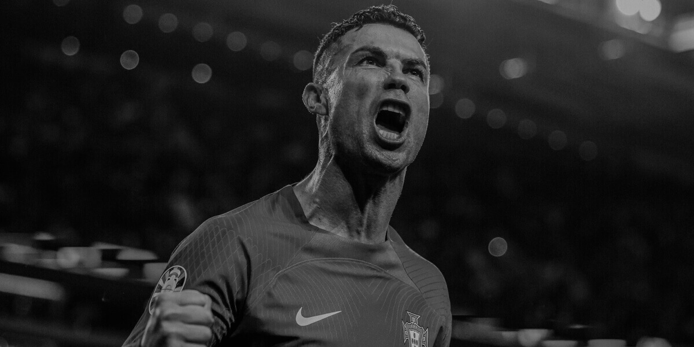

CR7
Biography of Cristiano Ronaldo
Cristiano Ronaldo dos Santos Aveiro, born on February 5, 1985, in Madeira, Portugal, is widely regarded as one of the greatest footballers of all time. Growing up in a humble family, Ronaldo showed a passion for football at an early age, joining Andorinha, a local club, at just 8 years old. At 12, he moved to Lisbon to join Sporting CP's academy, demonstrating extraordinary talent and determination. Ronaldo made his professional debut for Sporting in 2002, attracting attention with his dazzling skills and speed. His breakthrough came in 2003 when Manchester United signed him, where he evolved into a global star, winning three Premier League titles and the UEFA Champions League.
In 2009, Ronaldo made a historic move to Real Madrid for a then-record transfer fee. During his nine years in Madrid, he became the club’s all-time leading scorer with 450 goals, winning four UEFA Champions League titles and two La Liga trophies. His rivalry with Lionel Messi during this period became one of the defining narratives of modern football. Ronaldo also earned four more Ballon d’Or awards during his time at Real Madrid, solidifying his status as a football legend.
In 2018, Ronaldo joined Juventus, bringing his exceptional goal-scoring prowess to Serie A. He led the team to two Serie A titles and continued breaking records, including becoming the fastest player in Juventus history to score 100 goals. In 2021, Ronaldo returned to Manchester United, where he was welcomed as a hero, scoring crucial goals despite the team’s struggles.
In 2023, he embarked on a new challenge, signing with Saudi Arabian club Al-Nassr, further expanding football’s global reach. Beyond club success, Ronaldo has been a cornerstone of Portugal’s national team, winning the Euro 2016 and Nations League 2019, while becoming the all-time leading international scorer. Known for his incredible work ethic, athleticism, and versatility, Ronaldo has redefined longevity in football, maintaining elite performance into his late 30s.
Off the pitch, Ronaldo is also a philanthropist and entrepreneur, investing in fashion, hospitality, and fitness. Despite his monumental success, he remains a symbol of hard work and perseverance, inspiring millions worldwide. His story is one of relentless ambition and an unwavering desire to be the best, making him a global icon and a true legend of the game.
Video of Cristiano's Biography